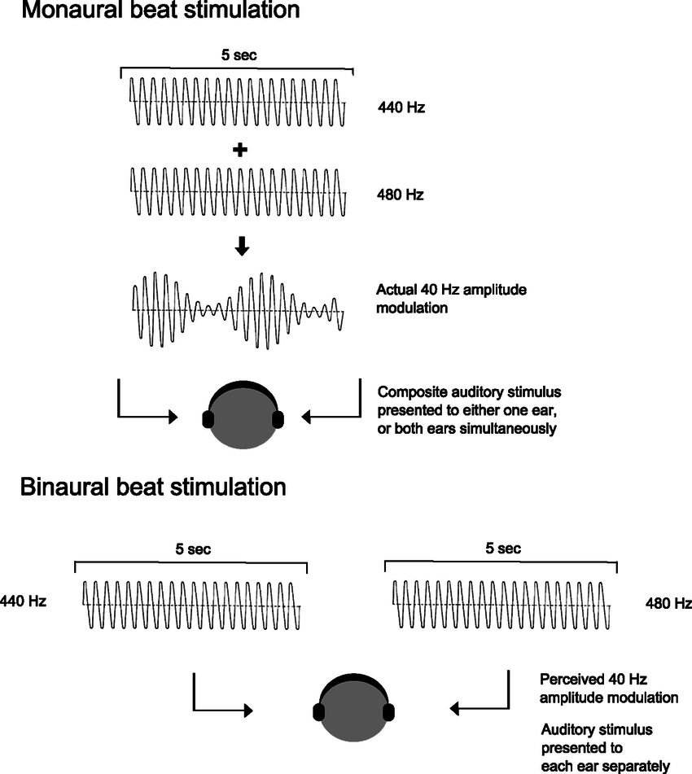
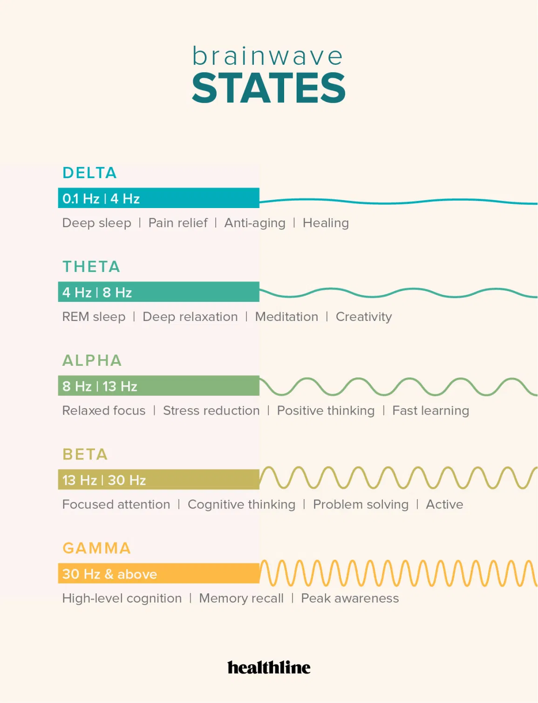

Binauralize Your Beats is designed to improve your mood by adding binaural basslines to your favorite songs
Binauralized Audio is when two closely spaced frequencies are played in different ears to create a beating effect. This auditory phenomena has been shown in multiple studies to improve mood in several ways. Binaural beats are not to be confused with monaural beats. Whereas, in monaural beats the frequency is created by combining two frequencies and displaying the combined frequencies in both ears; Binaural Beats displays the two frequencies unmixed, seperately in both ears.

Benefits of Binauralized Basslines
Deep Sleep or REM Sleep:
Frequencies ranging from 0.5 to 4 hz are known as delta waves. Delta waves are emitted by your brain when you are in REM sleep or Deep Sleep. REM sleep stands for rapid eye movement sleep that occurs when you are in the 4th stage of sleeping, the deepest stage where your brain rests and retains memories. Dreams also occur in REM sleep, and your body goes through most of its renewal processes that allow you to wake up feeling restored. Listening to delta waves while in the early stages of sleep can induce a deeper sleep.
Listen To A Sample
Meditation and NREM Sleep:
Frequencies ranging from 4 to 8 hz is known as theta waves. Theta waves are emitted by your brain when you are in Non-REM sleep or a semi-conscious medatative state. Non-REM sleep stands for non-rapid eye movement sleep, which is an earlier stage of sleep that your brain has to go through before reaching REM sleep when dreams occur and the body renews itself. However, using theta wave binaural beats has been proven to induce sleep better than delta waves, as the brain has to get to NREM sleep before it can reach REM sleep.
Listen To A Sample
Relieve Stress and Relaxtion:
Frequencies ranging from 8 to 12 hz are known as alpha waves. Alpha waves are emitted by your brain when you are relaxed and conducive to the early stages of sleep. Alpha waves are some of the strongest brain signals. In studies, alpha activity has been linked to a reduction in stress, anxiety, discomfort and pain.
Listen To A Sample
Focus:
Frequencies ranging from 12 to 30 hz are known as beta waves. Beta waves are emitted by your brain when you are active, focused and awake. Beta waves are constantly emmited while you are awake and are the most common brainwaves. If you are finding yourself distracted or disengaged when working, binaural beats can create betawaves to naturally hone your focus. Beta waves have also been shown to improve information retention as well.
Listen To A Sample
Memory and Learning:
Frequencies ranging from 30 to 50 hz are known as gamma waves. Gamma waves are not commonly produced by your brain and spike when you are highly alert or trying to retain information. Gamma waves are far more noticable than lower frequency waves as they have a much higher pitched sound. Listening to gamma waves while attempting to study or learn have been shown to improve memory. Gamma wave binaural beats have also been shown to entrain the brain to a more attentative state, improving reaction time.

Listen To A Sample
